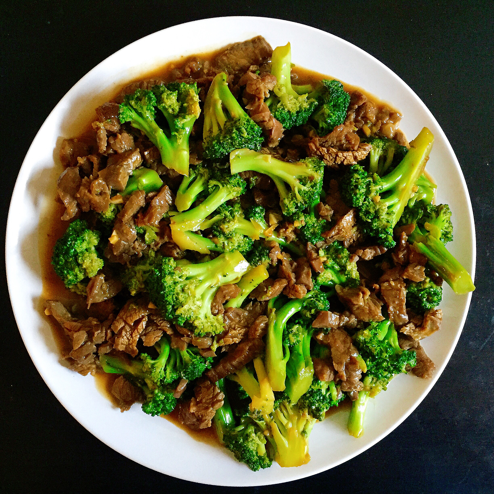

Stir-Fry

Description
Stir-Fry is a dish in which vegetables and meat are fried in a small amount of hot oil while being tossed in a wok. It is typically served over rice.
Ingredients
- 2 Tablespoons vegetable oil
- 1 pound beef sirloin, cut into 2 inch strips
- 1 1/2 cups fresh broccoli florets
- 1 red bell pepper, cut into matchsticks
- 2 carrots, thinly sliced
- 1 green onion, chopped
- 1 teaspoon minced garlic
- 2 tablespoons soy sauce
- 2 tablespoons sesame seeds, toasted
Steps
- Gather all ingredients.
- Heat vegetable oil in a large wok or skillet over medium-high heat; add beef and stir-fry until browned, 3 to 4 minutes.
- Move beef to the side of the wok and add broccoli, bell pepper, carrots, green onion, and garlic to the center of the wok; stir-fry vegetables for 2 minutes.
- Stir beef into vegetables and season with soy sauce and sesame seeds. Continue to cook and stir until vegetables are tender, about 2 more minutes.
- Serve with rice and enjoy!
Home